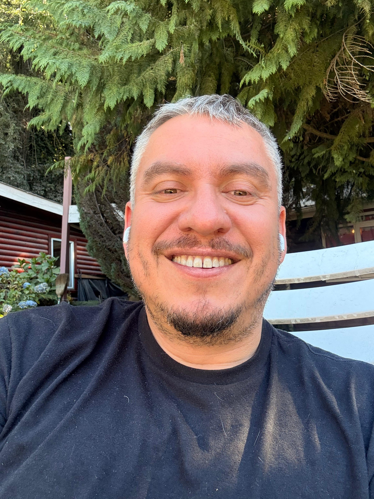

Hola, soy Javier.
Un espacio para compartir proyectos, aprendizajes, intereses y algo de mi historia.
Soy padre, químico farmacéutico, estudiante y una persona curiosa por naturaleza. Me interesan la tecnología, el aprendizaje continuo y los proyectos que permiten transformar ideas en algo tangible.

Radioafición
Supply Chain
Sobre mí
Esta página busca reunir distintas partes de mi vida sin convertirlas en una copia de LinkedIn. Aquí quiero compartir proyectos, intereses, aprendizajes y algunas ideas que normalmente no aparecen en una presentación profesional.
Me gusta aprender, probar herramientas nuevas y entender cómo funcionan las cosas. Con el tiempo he descubierto que muchas de mis motivaciones se conectan entre sí: la curiosidad, la resolución de problemas, la tecnología, la naturaleza, la familia y las ganas de seguir construyendo algo propio.
Áreas de interés
Familia y paternidad
Ser padre es una parte central de mi vida y también una experiencia que ha cambiado mi forma de mirar el tiempo, las prioridades y los proyectos personales.
Radioafición
Me atrae el mundo de las comunicaciones, la tecnología radial y la posibilidad de conectar personas a través de distintos medios y frecuencias.
Naturaleza
Disfruto los espacios abiertos, el aire libre y las experiencias que permiten desconectarse del ritmo cotidiano.
Trekking
Caminar, explorar rutas y estar en contacto con distintos paisajes es una forma simple de ordenar ideas y recuperar perspectiva.
Jeepeo
Me gusta la exploración en ruta, la conducción fuera de camino y la mezcla entre técnica, planificación y aventura.
Tecnología y proyectos
Me interesan las herramientas digitales, los datos, la automatización y las formas prácticas de aplicar tecnología a problemas reales.
Contacto
También puedes encontrar mi perfil profesional en LinkedIn.